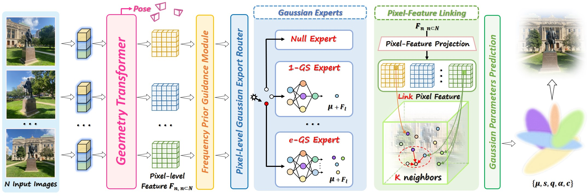
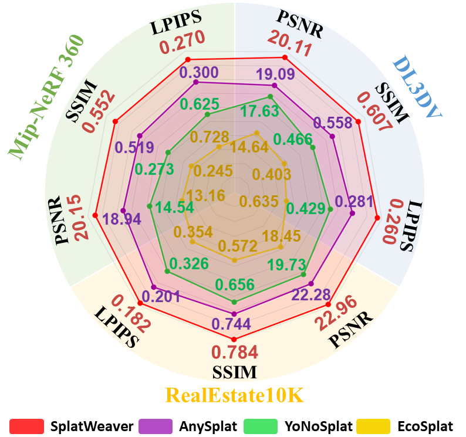
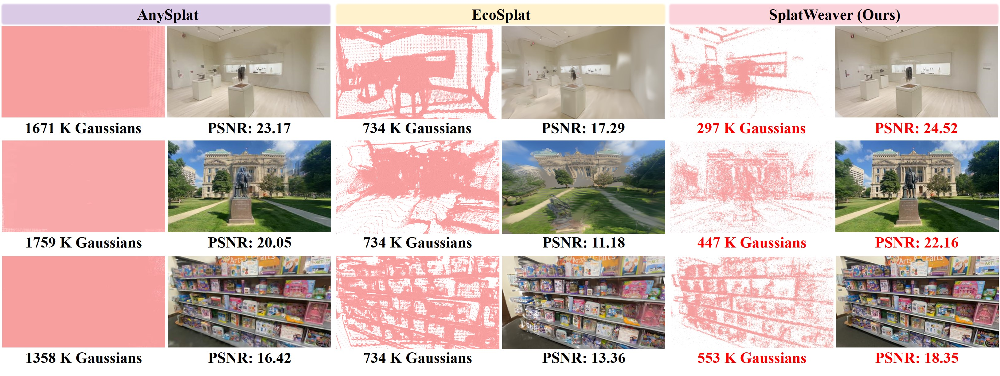

Abstract
Dense Where Complex, Sparse Where Smooth
In this work, we propose SplatWeaver, a feed-forward framework capable of allocating a dynamic number of Gaussian primitives across spatial regions for generalizable novel view synthesis. In contrast to existing methods that typically predict uniform per-pixel or per-voxel Gaussian primitives and fail to adjust for spatially varying complexity, our approach dynamically distributes Gaussians across different spatial regions, enabling more flexible and expressive 3D scene modeling.
We introduce cardinality Gaussian experts, where each expert specializes in predicting a specific number of Gaussian primitives from 0 to M. These experts are orchestrated through a pixel-level routing scheme, enabling flexible allocation of Gaussians across the scene.
Method
Overview of SplatWeaver
SplatWeaver learns how many Gaussian primitives each spatial region needs, replacing uniform allocation with routed cardinality experts.

Cardinality Experts
Each expert predicts a dedicated primitive count, allowing the model to express empty, simple, and complex regions differently.
Pixel-level Routing
A routing scheme assigns experts across the image so primitive density follows local scene complexity.
Coherent Parameters
Hidden Gaussians are aggregated with spatial neighbors before final parameter prediction, improving attribute consistency.
Performance
State-of-the-art Results with Economical Primitives
SplatWeaver achieves consistent state-of-the-art performance across three benchmarks in pose-free generalizable novel view synthesis.

Visual Comparison
Primitives Follow Scene Complexity
SplatWeaver concentrates primitives in intricate areas while maintaining sparsity in smooth regions, producing higher-quality renderings with a compact representation.

Citation
BibTeX
@article{wan2026splatweaver,
author = {Yecong Wan and Fan Li and Mingwen Shao and Wangmeng Zuo},
title = {SplatWeaver: Learning to Allocate Gaussian Primitives for Generalizable Novel View Synthesis},
journal = {arXiv preprint arXiv:2605.07287},
year = {2026}
}